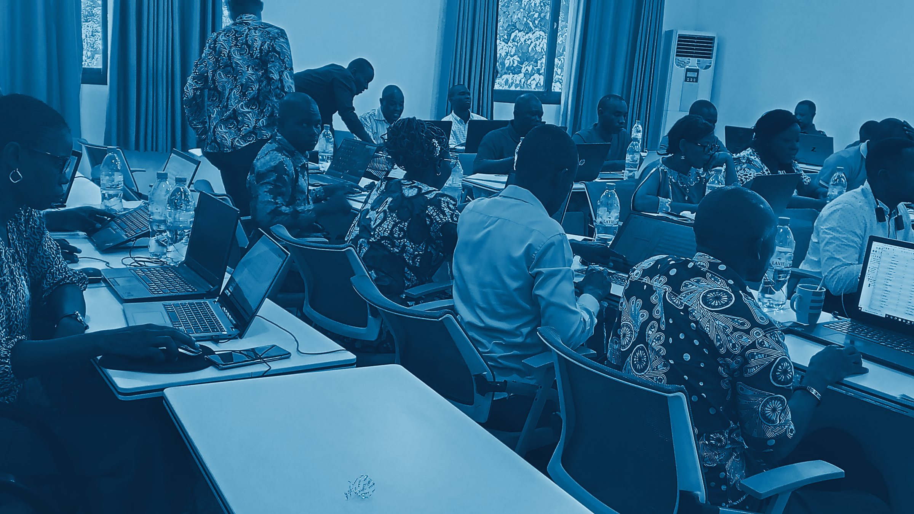
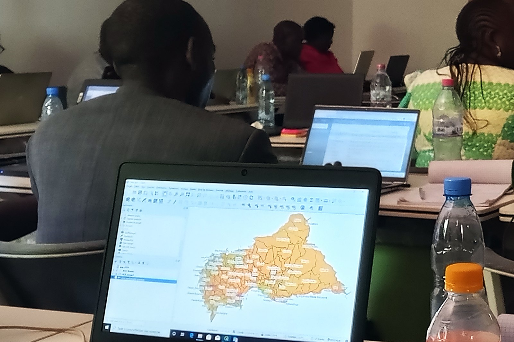
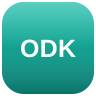
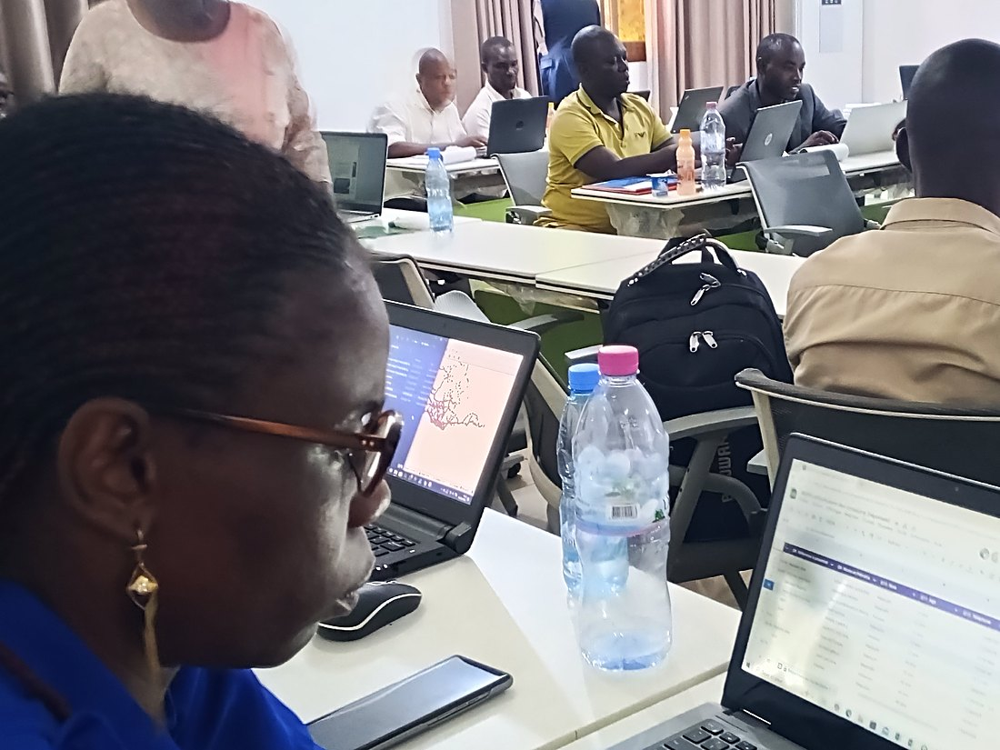
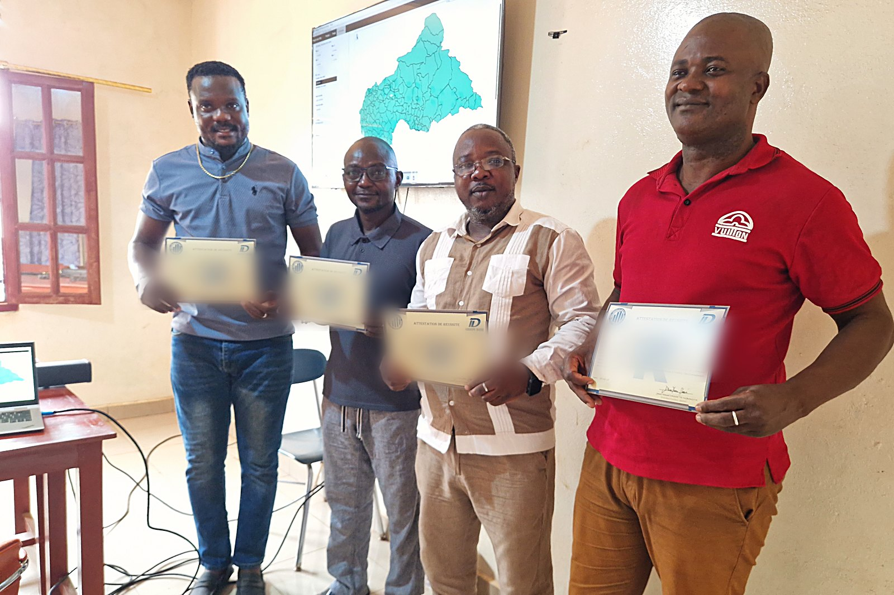
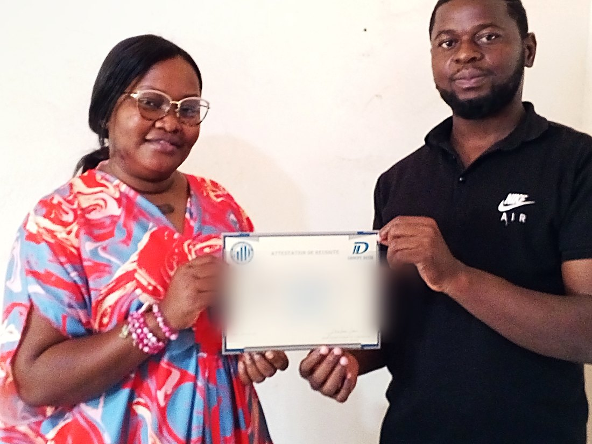
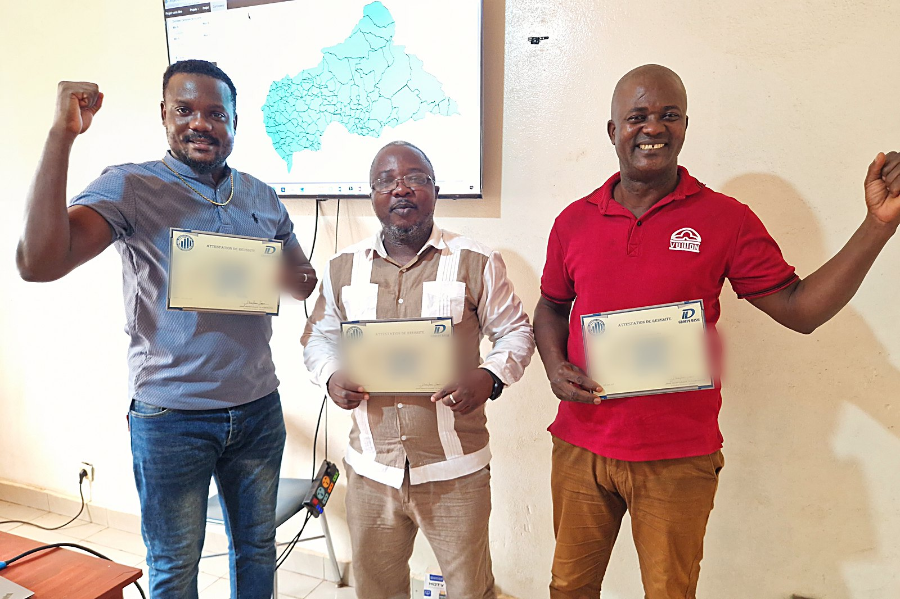
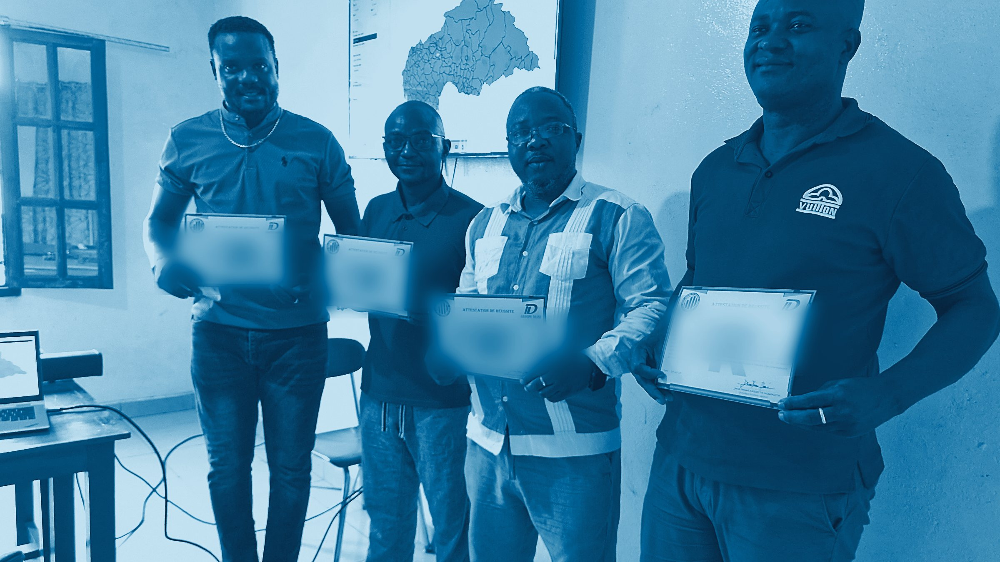

01Module
Cadrer la demande : du problème au protocole
Lire des termes de référence, reformuler une commande floue, poser la problématique, les questions d’évaluation et les objectifs. Livrable : votre note de cadrage.

2e édition · Rentrée du 20 août 2026 · en ligne et en présentiel
Maîtrisez toute la chaîne d’un projet d’enquête : de la problématique au rapport soutenu devant un décideur. Pas un cours magistral — une mission complète, conduite du premier au dernier jour, sur une question centrafricaine réelle. Seconde édition, revue avec les retours de la première promotion. Deux formules : BootCamp intensif pour les étudiants et doctorants, Cours du soir approfondi pour les professionnels et les institutions.
Le contexte centrafricain
La République centrafricaine a lancé son quatrième recensement général de la population, vingt-deux ans après le précédent. Elle pilote un Plan national de développement doté de 7 040 milliards de FCFA, dont chaque axe se mesure à des indicateurs. Elle rend compte de 66 cibles des Objectifs de développement durable. Tout cela repose sur une seule chose : des personnes capables de concevoir une enquête, de la conduire et d’en tirer des conclusions défendables.
Et pour vous, concrètement
Les recruteurs des ONG, des agences des Nations unies, des instituts nationaux et des cabinets d’études ne demandent pas « avez-vous étudié la statistique ». Ils demandent : « avez-vous déjà conduit une enquête ». Entre les deux, il y a un écart que l’université, seule, ne comble pas.
Le sujet tient. La problématique, l’échantillon et le plan d’analyse, moins. Le jury n’attaque jamais le thème : il attaque la méthode.
Vous collectez, puis vous confiez les données à un tiers pour l’analyse. Vous ne maîtrisez ni le calendrier, ni la qualité, ni ce qui sort.
Savoir cliquer dans SPSS n’est pas savoir bâtir un plan de sondage, superviser vingt enquêteurs ou défendre un taux de non-réponse.
Aucun protocole, aucun questionnaire, aucun rapport à montrer. À compétences égales, c’est le dossier de travaux qui départage.
La réponse
Vous ne suivez pas dix cours indépendants. Vous conduisez une seule étude, du premier au dernier jour, comme en mission : vous cadrez, vous concevez, vous allez sur le terrain à Bangui, vous apurez, vous analysez, vous cartographiez, vous rédigez, vous soutenez.

Travaux cartographiques sur données nationales — atelier conduit par le cabinet, Bangui, mai 2026.
Le parcours
Les mêmes dix modules dans les deux formules. Le BootCamp les traite en 15 journées de sept heures ; le Cours du soir les étale sur 60 séances de cinq heures, avec les approfondissements métier et les cas d’opérationnalisation en plus. Chaque module se termine par une pièce livrée et corrigée : à la fin, ces pièces forment votre dossier de travaux.
Lire des termes de référence, reformuler une commande floue, poser la problématique, les questions d’évaluation et les objectifs. Livrable : votre note de cadrage.
Du concept à la variable, de la variable à la question. Formulation, modalités, filtres, ordre, durée d’administration, traduction et pré-test en sango. Livrable : votre questionnaire pré-testé.
Base de sondage, tirage aléatoire simple, stratifié, en grappes à deux degrés. Taille d’échantillon, marge d’erreur, pondérations et redressement. Livrable : votre plan de sondage chiffré.
Logique XLSForm : types de questions, contraintes, sauts, calculs, groupes et répétitions. Déploiement sur tablette et sur téléphone, mode hors connexion. Livrable : votre formulaire déployé.

Recrutement et formation des enquêteurs, découpage des itinéraires, gestion des refus et des incidents, contrôle qualité en cours de collecte. Sortie réelle dans un arrondissement de Bangui. Livrable : vos données collectées.
Contrôles de cohérence, valeurs aberrantes et manquantes, recodage, dictionnaire des variables, plan d’archivage, anonymisation et protection des données personnelles. Livrable : votre base propre et documentée.
Tris à plat et croisés, pondération, indicateurs composites, intervalles de confiance. Savoir ce qu’on a le droit de conclure — et ce qu’on n’a pas le droit de dire. Livrable : vos tableaux d’analyse.
Comparaisons de moyennes et de proportions, tests d’indépendance, corrélation, régression linéaire et logistique. Interprétation en langage de décideur. Livrable : vos scripts d’analyse commentés.
Règles de visualisation, choix du graphique juste, cartographie thématique des préfectures et des arrondissements, tableau de bord de suivi d’indicateurs. Livrable : votre planche de résultats et votre carte.
Plan type d’un rapport d’étude, note de synthèse de deux pages, résumé exécutif, règles de citation des sources. Puis soutenance de dix minutes devant un jury blanc. Livrable : votre rapport et votre présentation.
Les outils
On n’apprend pas neuf logiciels pour la collection. Chacun intervient là où il est le meilleur, et vous repartez en sachant lequel ouvrir devant quel problème.
Collecte mobile
La plateforme d’enquête des ONG et des agences humanitaires. Conception du formulaire, déploiement sur les téléphones des enquêteurs, collecte hors connexion, remontée automatique des soumissions et suivi de la collecte en temps réel.
Gratuit — compte humanitaireCollecte mobile
La brique libre sur laquelle repose l’essentiel de la collecte assistée par tablette. Même logique XLSForm que Kobo, mais serveur maîtrisé de bout en bout — le choix des institutions qui doivent garder leurs données chez elles.
Libre et gratuitCollecte légère
L’outil du sondage rapide, de la pré-enquête et de la consultation interne. Ses limites sont enseignées autant que ses usages : ce qu’il ne faut jamais lui confier, et pourquoi.
GratuitApurement et calcul
Le format que tout le monde vous enverra. Tableaux croisés dynamiques, formules de contrôle, repérage des doublons et des incohérences, mise en forme conditionnelle pour l’apurement, export propre vers les logiciels d’analyse.
Licence — alternative libre présentéeAnalyse par menus
La référence des mémoires universitaires et des services d’études. Tris, croisements, tests, pondération, analyse factorielle. Prise en main par menus, puis passage à la syntaxe — parce qu’une analyse non scriptée n’est pas reproductible.
Licence — version d’essai fournieAnalyse en économie et santé
L’outil des économistes, des épidémiologistes et des enquêtes ménages. Gestion native des plans de sondage complexes et des pondérations — ce que peu de logiciels font correctement, et ce qui sépare une estimation juste d’une estimation fausse.
Licence — version d’essai fournieAnalyse et graphiques
Libre, gratuit, sans limite de taille de fichier ni de licence à renouveler. Nettoyage, analyse, graphiques de qualité publication et rapports qui se régénèrent tout seuls quand les données changent. Vous repartez avec vos scripts.
Libre et gratuitCartographie
Représenter un indicateur sur les préfectures, les sous-préfectures ou les arrondissements de Bangui. Jointure entre une base d’enquête et un fond de carte, choix des classes, sémiologie graphique, export imprimable.
Libre et gratuitTableau de bord
Passer d’un rapport figé à un tableau de bord que le décideur manipule lui-même : filtres, séries, alertes de seuil. Le format attendu par les directions de suivi-évaluation et les bailleurs.
Version gratuite suffisanteLes marques et noms de logiciels cités appartiennent à leurs propriétaires respectifs. Leur mention désigne les outils enseignés pendant la formation et n’implique aucun partenariat, parrainage ni affiliation.
Qui vous forme
Ceux qui enseignent conduisent des enquêtes pour de vrai — dans l’institut national de statistique, dans les projets de développement, dans les systèmes d’information qui font tourner le suivi-évaluation. Les chiffres nationaux cités plus haut sur cette page, l’un d’eux les a produits.
Ingénieur statisticien
Spécialiste MEAL, analyste quantitatif et développeur de systèmes d’informations décisionnelles. Conduit les modules de numérisation, d’analyse et de restitution.
Ingénieur statisticien économiste · Directeur à l’ICASEES
Seize ans d’expérience. Directeur technique de l’EHCVM 2021 — l’enquête nationale dont cette page cite les chiffres — et participant aux travaux techniques d’élaboration du PND 2024-2028. Consultant principal de la deuxième Monographie communale, consultant pour l’UNFPA et la Banque mondiale. Formé à l’ISSEA de Yaoundé et à l’ENSEA d’Abidjan. Conduit les modules de cadrage, de questionnaire et d’échantillonnage.
Ingénieur statisticien
Spécialiste en traitement et analyse des données. Conduit les modules d’apurement, de documentation et d’analyse approfondie.
Ancrage
Ce que vous apprenez ici n’est pas un savoir hors sol : c’est exactement la capacité que les cadres nationaux — mondiaux, continentaux et centrafricains — désignent comme manquante.
17 objectifs, 169 cibles, horizon 2030. Deux cibles portent précisément sur ce métier : 17.18, qui appelle des données de qualité, actualisées et désagrégées par sexe, âge, handicap et localisation ; 17.19, qui appelle le renforcement des capacités statistiques. Les modules 2, 3 et 6 y répondent directement.
8 objectifs, 21 cibles, 60 indicateurs, de 2000 à 2015. Le bilan a montré partout la même limite : on ne pouvait pas prouver les progrès faute de mesures régulières. Les ODD ont donc multiplié par trois l’exigence de mesure. C’est cette exigence qui crée les postes d’aujourd’hui.
Le plan quinquennal en vigueur couvre 66 cibles ODD réparties sur cinq axes, et fait de la finalisation du RGPH-4 un objectif stratégique à part entière. Son cadre de résultats se renseigne « sur la base d’un programme d’enquêtes » — c’est-à-dire sur le travail que cette formation enseigne.
| Axe | Intitulé | Cibles ODD | Ce que le suivi demande |
|---|---|---|---|
| 1 | Renforcement de la sécurité, promotion de la gouvernance et de l’État de droit | 9 | Enquêtes de perception, indicateurs de gouvernance |
| 2 | Développement du capital humain et accès équitable à des services sociaux de base de qualité | 15 | Enquêtes ménages, données désagrégées par sexe et par âge |
| 3 | Développement des infrastructures résilientes et durables | 10 | Recensements d’équipements, données géolocalisées |
| 4 | Accélération de la production et des chaînes de valeur dans les filières productives | 18 | Enquêtes agricoles, recensement des unités économiques |
| 5 | Durabilité environnementale et résilience face aux crises et au changement climatique | 14 | Suivi cartographique, séries temporelles |
Intitulés et décomptes de cibles : Plan national de développement de la République centrafricaine 2024-2028, section 2.10.1 « Alignement du PND-RCA avec les agendas internationaux ».

Atelier d’analyse — Bangui, mai 2026.
Ce que vous emportez
La première promotion
La première édition n’est pas une promesse : elle est allée jusqu’au bout. Étude complète, soutenance devant un jury, remise des attestations de réussite. La seconde édition reprend le même parcours, revu à partir des retours de cette promotion.



Photographies prises lors des remises d’attestations de la première édition. Les noms portés sur les attestations ont été rendus illisibles : ce sont des personnes privées, et leur identité n’a pas à circuler dans une campagne.
Participation
Les mêmes dix modules, les mêmes intervenants, le même certificat. Ce qui change, c’est le rythme et le public — choisissez celle qui tient dans votre semaine. Les deux se suivent en ligne sur Zoom ou en présentiel.
Un ordinateur portable personnel est obligatoire — c’est la seule condition matérielle, et elle n’est pas négociable : on n’apprend pas neuf logiciels en regardant l’écran du voisin. De notre côté : connexion Internet mise à disposition pendant les séances et assistance technique tout au long du parcours.
Calendrier
Deux rendez-vous ont lieu avant l’ouverture : personne n’entre en salle le premier jour sans avoir reçu ses fichiers et installé ses logiciels.
Objections
Le Cours du soir, sans hésiter : les séances vont de 16 h à 21 h, du lundi au samedi (dimanches exclus), après la journée de travail. Le BootCamp, lui, occupe les journées entières du lundi au samedi — il est pensé pour les étudiants et les doctorants. Et comme les deux formules sont accessibles sur Zoom, une réunion imprévue ne vous fait pas perdre la séance.
Oui. Les deux formules se suivent en ligne sur Zoom comme en présentiel, et vous pouvez alterner d’un jour à l’autre. Seule la sortie de collecte du module 5 suppose d’être à Bangui ; les participants à distance travaillent alors sur un jeu de données de terrain fourni et sur la supervision à distance de la collecte.
Oui. Le parcours part de la commande d’étude, pas de la théorie des probabilités. Chaque notion est introduite au moment où elle sert, et l’encadrement rapproché permet de ne laisser personne derrière. Le seul pré-requis réel est de savoir utiliser un ordinateur et un tableur au niveau débutant.
Oui, c’est obligatoire et c’est la seule condition matérielle. Vous installez les neuf logiciels sur votre propre machine dès la séance du 19 août, avec notre assistance : vous repartez donc avec un poste de travail complet, pas seulement avec des souvenirs de manipulation. Internet est mis à disposition pendant les séances.
C’est un certificat professionnel délivré par OUBANGUI STAT CONSULTING, pas un diplôme d’État : nous le disons franchement. Ce qui pèse en entretien, c’est le dossier de travaux que vous emportez — protocole, questionnaire, base apurée, rapport et soutenance — et c’est précisément ce que la formation produit.
Parce qu’il s’agit de la session de lancement de la rentrée 2026 : 100 000 FCFA au lieu de 250 000 pour le BootCamp, 200 000 au lieu de 300 000 pour le Cours du soir. Le règlement se fait en une fois au démarrage. Les sessions suivantes reprendront le tarif plein.
Cinq des neuf outils du parcours sont libres et gratuits — KoboToolbox, ODK, R, QGIS, Google Forms — et couvrent à eux seuls toute la chaîne. Excel, SPSS, Stata et Power BI sont enseignés parce que vos commanditaires les utilisent ; les équivalents libres et la façon de passer de l’un à l’autre sont montrés en séance.
Oui, sur demande, à partir de huit participants : dans vos locaux à Bangui, en province, ou entièrement à distance. Le programme est alors adapté à vos données et à vos enquêtes en cours. Écrivez-nous en précisant votre structure et le nombre de personnes concernées.

Dernière étape
Trente personnes suivront le Cours du soir, et la rentrée est le 20 août. Réserver prend cinq minutes : un message sur WhatsApp suffit à bloquer votre place.
Téléphone · WhatsApp · Telegram 00 236 72 72 84 42